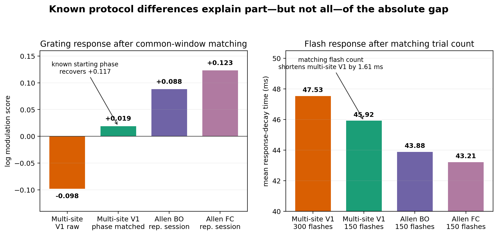
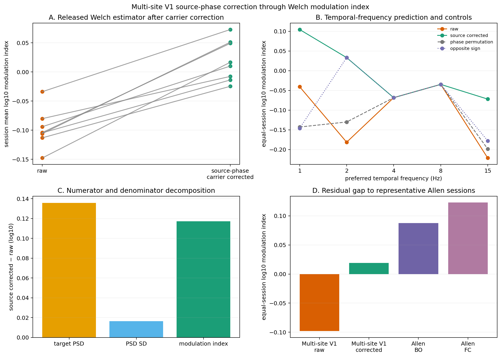
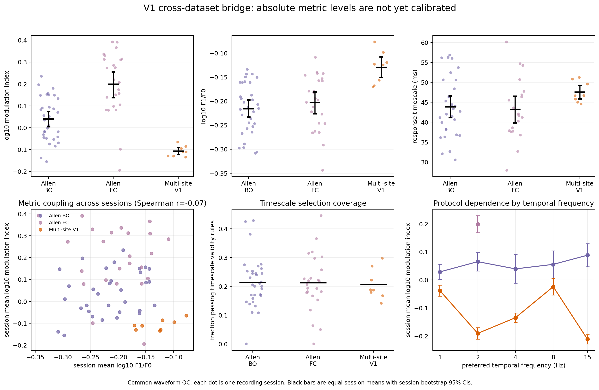

Analysis snapshot: 9 August 2026
This report summarizes the differences found so far between the eight-session multi-site V1 dataset and the Allen Visual Coding V1 data used in the original platform-paper analysis.
The recordings were collected under the project title MouseV2. Because that name can be mistaken for either visual area V2 or the higher visual areas, this report uses multi-site V1 recordings for the experimental group and multi-site V1 as its short label. MouseV2 refers only to the originating project, not to a brain area or dataset cohort.
The language is intentionally simple. Technical names are included only when they identify an exact analysis field or a reproducible test.
One-sentence conclusion
The multi-site V1 recordings and Allen both measure V1, but they do not yet provide a fully like-for-like absolute comparison: stimulus timing explains a large part of the grating difference and flash count explains part of the decay-time difference, while anatomical population matching and physical display timing remain unfinished.
The anatomical question is different. Multi-site V1 repeatedly samples four known locations within V1 in the same session. The Allen analysis pools V1 units under one VISp area label and one published hierarchy position. Allen is not literally a single-probe dataset; it is “single-ish” because V1 is represented as one area category rather than as four matched within-V1 locations.
The grating stimuli differ substantially. Multi-site V1 uses 1-second gratings, five spatial frequencies, 15 repeats, and a phase that continues across the stimulus schedule. Allen uses 2-second gratings, a fixed spatial frequency, and two different stimulus families: Brain Observatory and Functional Connectivity. Those Allen families also differ from each other.
The published grating score is unusually sensitive to timing. It first averages trials and then measures the strength of the expected response rhythm. Multi-site V1 trials have several source-defined starting phases at 1, 2, and 15 Hz. Averaging those phases cancels part of the response even when the individual trials are strongly modulated.
We can now explain much, but not all, of the grating gap. On a common 1-second, 15-trial condition set, multi-site V1 starts 0.186 and 0.220 log units below representative Allen Brain Observatory and Functional Connectivity sessions. Correcting only the known starting-phase component raises multi-site V1 by 0.117 log units and leaves gaps of 0.069 and 0.104. This removes about 53–63% of the original gap. All eight multi-site V1 sessions move in the predicted direction.
The flash protocols also differ. Multi-site V1 has 300 flashes; Allen has 150. Matching multi-site V1 to 150 flashes reduces its mean response-decay time from 47.53 to 45.92 ms. This explains 1.61 ms of the original 3.65-ms difference from Allen Brain Observatory, leaving about 2.04 ms.
Absolute flash latency is not calibrated. Multi-site V1 latency is measured from the timestamp stored in the NWB file. The files used here do not contain a photodiode or other record of the exact instant light reached the screen. We therefore do not interpret an absolute multi-site V1–Allen latency offset.
Basic unit quality is now matched, but the biological populations are not. Both datasets use the same waveform-quality rules. Multi-site V1 still lacks a validated all-session receptive-field significance/area filter comparable to Allen, and layer, depth, receptive-field location, and firing rate have not yet been matched with truly equivalent fields.
The comparison among multi-site V1 probes A, B, C, and E is meaningful as a categorical comparison among known V1 locations. The absolute Allen V1 point is still context, not a calibrated baseline. No mean shift or fitted dataset offset should be applied to make the curves line up.
| Feature | Multi-site V1 recordings (MouseV2 project) | Allen V1 used here |
|---|---|---|
| Recording structure | Eight sessions from six-probe experiments; the current V1 analysis contains probes A, B, C, and E | Multi-probe experiments across many visual areas; V1 units are pooled under one VISp area label |
| Within-V1 replication | Four spatially separated V1 probe groups in every session | No matched four-location within-V1 design analogous to A/B/C/E in the released area-level comparison |
| Sessions in the released V1 summary | 8 | 56 with valid grating values: 32 Brain Observatory and 24 Functional Connectivity |
| Units before common quality rules | 20,374 | 99,180 in the full released unit table; 4,121 common-quality units in V1 |
| Units after common quality rules | 11,242 | About 4,100 V1 units with valid grating values |
| Raw matched reanalysis | All eight multi-site V1 sessions | One representative raw session per Allen stimulus family for the common-window result, plus one reproduction-control session per family |
| Main strength | Repeated, simultaneous sampling of several known locations within V1 | Many sessions and a broad, standardized survey of visual areas |
| Main limitation for this comparison | Only eight sessions and no Allen-equivalent RF/layer population yet | The published V1 value collapses within-V1 location and mixes two stimulus families |
The Allen dataset is not a single recording and not necessarily a single probe trajectory. The simplification happens in the analysis: every V1 unit is given the same VISp area identity and the same published inter-area hierarchy score. The multi-site V1 recordings instead ask whether four repeated locations inside V1 differ from one another. These are related questions, but they are not identical experimental designs.
The unequal session structure also matters statistically. Four probe means from the same multi-site V1 session share the same animal, stimulus run, and brain state. Allen areas recorded in the same session are also correlated. Treating thousands of units as independent would greatly overstate certainty. Our current summaries therefore use session-level means, although the final model should preserve the matched groups within each session more explicitly.
The multi-site V1 recordings are known experimentally to be in V1, and the part of V1 sampled by each probe is known. The missing quantity is not V1 identity. The missing quantity is a validated numerical hierarchy score for each probe location that would be comparable to the published numbers assigned to whole areas such as V1, LM, AL, PM, and AM.
The main analysis now handles this correctly:
All eight multi-site V1 NWBs have complete probe labels and probe-relative spike
positions. However, their electrode location field is recorded as unknown,
and they do not contain registered anterior–posterior, medial–lateral, or CCF
coordinates. The known anatomical localization therefore exists outside the
machine-readable fields currently versioned in this repository.
This does not invalidate the categorical probe comparison. It does prevent us from drawing a precise anatomical surface map until the targeting or registration record is imported with its coordinate system and uncertainty.
Provisional receptive-field peaks are available for all 20,374 multi-site V1 units and for 32 session-by-probe groups. They show that the four probes sample different parts of visual space, but they also expose important limitations:
The measured positions are therefore a two-dimensional companion description, not a one-dimensional hierarchy score and not yet a replacement for Allen’s published receptive-field quality filter.
Multi-site V1 has cortical depth and layer labels in the processed tables. They have not yet been matched to Allen with a common normalized-depth definition. A different mixture of layers could contribute to remaining response differences.
Status: V1 identity and categorical probe location are established. Exact registered surface coordinates, a within-V1 hierarchy score, and a homologous layer/RF population are not established.
| Protocol feature | Multi-site V1 | Allen Brain Observatory | Allen Functional Connectivity |
|---|---|---|---|
| Grating duration | 1.0 s | 2.0 s | 2.0 s |
| Grating conditions | 4 directions × 5 rates × 5 spatial frequencies = 100 | 40 nonblank conditions; one spatial frequency | 8 directions at 2 Hz; one spatial frequency |
| Repeats | 15 per condition | 15 per condition | 75 per condition |
| Spatial frequency | 0.02, 0.04, 0.08, 0.16, 0.32 cycles/degree | 0.04 cycles/degree | 0.04 cycles/degree |
| Contrast in the common comparison | 0.8 | 0.8 | 0.8 |
| Blank after each grating | 1.25 s | Different schedule | Different schedule |
| Grating starting phase | Frame-continuous; not reset at each presentation | Different schedule | Different schedule |
| Full-field flashes | 150 bright + 150 dark = 300 | 75 bright + 75 dark = 150 | 75 bright + 75 dark = 150 |
The published modulation score measures power at the expected grating rhythm relative to power at other rhythms. The time window determines which rhythms can be measured exactly.
Thus, identical source code can still perform a different numerical measurement when the input window changes.
These were pipeline differences, not biological findings:

Figure 1. Left: the grating comparison after matching the response window, trial count, spatial frequency, contrast, and shared condition support. Removing only the known multi-site V1 starting-phase difference raises the multi-site V1 score but does not reach either representative Allen session. Right: matching multi-site V1 from 300 to 150 flashes shortens its estimated decay time but leaves a smaller residual difference. Allen grating bars are representative raw sessions; Allen decay bars summarize many released sessions.
The two panels show protocol sensitivity, not a fitted correction to force agreement. The multi-site V1 values change only through rules known before looking at the Allen target values: the acquisition phase schedule and the flash count.
The remaining differences can reflect several things at once:
The current evidence does not identify how much of the residual belongs to each category.
Using the released fields with common basic quality rules, the session-average log modulation score is:
The large difference between the two Allen families is itself important. It shows that there is no single protocol-independent “Allen V1 modulation value.” Functional Connectivity has many more repeats and a smaller condition set, and its published modulation score is much higher even though its alternative single-trial modulation measure is nearly unchanged.
Restricting multi-site V1 to the Allen spatial frequency of 0.04 cycles/degree, four shared directions, five shared movement rates, contrast 0.8, and 15 trials changes the multi-site V1 mean by only +0.009 log units, from about −0.107 to −0.098. Multi-site V1’s larger condition space is therefore not the main cause.
Representative raw Allen sessions were recomputed using the first 1 second and 15 trials. The harmonized Allen values were +0.088 for Brain Observatory and +0.123 for Functional Connectivity, compared with −0.098 for multi-site V1. The remaining raw gaps were 0.186 and 0.220 log units.
An alternative measure based on the strength within individual trials was nearly matched: multi-site V1 was only 0.032–0.035 log units below the representative Allen sessions. This told us that multi-site V1 neurons were not simply less driven by gratings.
On the matched support:
In plain language, the response peaks occur at less consistent points in the grating cycle. Averaging peaks that occur at different points cancels part of the response.
Multi-site V1’s grating phase is tied to the absolute frame number and does not reset at each presentation. The 1-second stimulus plus 1.25-second blank produces:
Removing only this known starting phase raises the released-style multi-site V1 score from −0.098 to +0.019. All 8 sessions increase; the exact two-sided session sign test is 0.0078. Randomly permuting the phase labels gives −0.123, the wrong rotation sign gives −0.087, and the predicted 4/8-Hz controls are unchanged.
The correction raises target-rhythm power by 0.136 log units while changing the score’s background spread by only 0.016. This is the expected signature of recovering a cancelled response rhythm, rather than changing the whole response.
The remaining gaps are 0.069 and 0.104 log units. The source phase is a real and material cause, but not a complete explanation.

Figure 2. Panel A shows that every multi-site V1 session moves upward after the source-defined carrier correction. Panel B shows that the change occurs at the movement rates for which the acquisition schedule predicts multiple starting phases; 4 and 8 Hz do not move. Panel C shows that most of the score change comes from stronger power at the target rhythm, not from a general change in the spectrum. Panel D shows the residual gap to one representative raw Allen session from each stimulus family.
After removing the known stimulus phase, a small residual phase shift is shared across physically separate probes: alignment is 0.173 versus 0.141 after shuffling trial correspondence. It also covaries descriptively with running and horizontal/vertical pupil position, but not clearly with pupil area.
This shared state does not close the Allen gap. Correcting a unit from the other probes changes coherence from 0.433 to 0.429 rather than increasing it. The behavior results come from only eight sessions and should be treated as clues about state, not as proof of a cause.
Multi-site V1 contains 150 bright and 150 dark flashes. Among common-quality units, the median first-spike time is 87.0 ms for pooled flashes, 87.0 ms for bright flashes, and 84.5 ms for dark flashes. For units with both values, the typical bright-minus-dark difference is only +1 ms.
The larger issue is the time reference. Multi-site V1 uses the NWB interval
start_time. That timestamp matches the processed stimulus timestamp series,
but the NWB does not contain an independent photodiode or physical light-onset
record. A display delay could therefore shift every multi-site V1 latency without
appearing in the analysis table.
For this reason:
With all 300 multi-site V1 flashes, the equal-session mean decay time is 47.53 ms. Allen Brain Observatory is 43.88 ms and Functional Connectivity is 43.21 ms, producing raw differences of +3.65 and +4.32 ms.
When multi-site V1 is repeatedly reduced to the Allen count of 75 bright plus 75 dark flashes:
Thus trial count explains about 44% of the original Brain Observatory decay difference. It does not explain all of it.
The decay calculation keeps only fits between 1 and 300 ms, with enough flash spikes and a small fitting error. With 300 flashes, 2,375 of 11,242 multi-site V1 common-quality units pass. After matching to 150 flashes, the mean valid fraction falls from 0.207 to 0.168. This selection change is part of the protocol effect, not a nuisance that can be ignored.
Bright-only and dark-only median valid decay times are about 37.26 and 37.08 ms, while the pooled median is 44.07 ms. Pooling the two polarities changes the shape and eligibility of the fitted response more than it changes first-spike time. The primary comparison therefore keeps balanced bright and dark flashes, with polarity-specific results as sensitivity checks.

Figure 3. Each dot is one session. The upper row shows the released grating modulation score, an alternative within-trial grating measure, and flash decay time. The lower row shows relationships and selection effects. This figure is useful for seeing session-to-session spread, but its absolute centers mix the known protocol differences described in this report. The separate harmonized tests provide the fairer mechanism checks.
The first two panels can appear contradictory: multi-site V1 has a much lower published modulation score but a higher alternative grating measure. They are answering different questions. The published score rewards a response that occurs at the same phase on every trial; the alternative measure retains strong modulation within each trial even when its phase varies.
The Allen Functional Connectivity sessions also sit above Brain Observatory for the published score but not for the alternative measure. This reinforces the conclusion that the score is sensitive to trial structure and averaging, not only to the strength of the neuronal response.
The decay-time panel shows a smaller absolute difference with broad overlap between session distributions. Matching flash count narrows this difference further, but does not settle whether the residual is protocol, population, or biology.
| Item | Current status |
|---|---|
| Basic unit quality | Same thresholds in both datasets: amplitude cutoff < 0.1, presence ratio > 0.8, and spike-timing violation ratio < 0.5 |
| Multi-site V1 grating preference | Uses the full direction × movement-rate × spatial-frequency condition |
| Common grating sensitivity | Shared directions/rates, spatial frequency 0.04, contrast 0.8, first 1 s, and 15 trials |
| Allen raw implementation | Reproduced released F1/F0 and modulation values in four checksum-verified NWBs |
| Flash polarity sensitivity | Bright, dark, and balanced pooled results are versioned |
| Flash trial-count sensitivity | Multi-site V1 repeatedly subsampled from 300 to 150 flashes |
| Multi-site V1 start phase | Reconstructed from frozen acquisition source and presentation order |
| Plot anatomy | Probe positions are categorical/display-only, not invented hierarchy scores |
| Item | Why it matters |
|---|---|
| Multi-session raw Allen grating bridge | The fully harmonized Allen result currently uses one representative session per stimulus family; it is a diagnostic, not a population coefficient |
| Receptive-field significance and area | Allen can apply the published RF-quality population; multi-site V1 has provisional peaks but no validated all-session equivalent |
| Receptive-field position/eccentricity | Different visual-field sampling could change response composition |
| Layer and normalized depth | Different layer mixtures could shift modulation and decay values |
| Firing rate | Multi-site V1’s available grating rate is for the preferred condition; Allen’s released field is an overall block rate, so they cannot be used as the same covariate |
| Physical display onset | Multi-site V1 NWBs lack the photodiode/light-onset provenance needed for an absolute latency calibration |
| Registered anatomical coordinates | Known probe targeting is not yet versioned as CCF or surface coordinates in this repository |
| Session-matched inference | The final statistical model should preserve four probes within multi-site V1 sessions and correlated areas within Allen sessions |
| Statistical power | Multi-site V1 has eight sessions; its probe-effect intervals are wide compared with the larger Allen survey |
Common quality rules retain 11,242 of 20,374 multi-site V1 units and about 4,100 Allen V1 units. These counts describe within-session distributions, not independent experiments. In the phase test, 4,739 affected units increase and 3,222 decrease, while every session-average increases; the session result is the primary evidence.
Across eight multi-site V1 recordings, response properties vary among known locations within V1. This within-V1 variation can be comparable to the variation attributed to higher visual-area labels in the Allen dataset. Absolute multi-site V1–Allen centers are not yet calibrated: known differences in grating starting phase and flash count explain substantial portions of the modulation and decay-time offsets, while a residual remains pending broader Allen reanalysis and homologous population matching.
This report is a synthesis of local, versioned analyses. It does not introduce a new dataset-level correction. The main evidence files are:
artifacts/figure3/06b_v1_dataset_bridge/V1_DATASET_BRIDGE.mddata/imports/allen_v1_raw_bridge_v2/README.mddata/imports/mousev2_grating_common_support_v1/README.mddata/imports/v1_grating_phase_bridge_v1/README.mddata/imports/mousev2_grating_start_phase_bridge_v1/README.mddata/imports/mousev2_grating_corrected_welch_bridge_v1/README.mddata/imports/mousev2_grating_shared_phase_behavior_v1/README.mddata/imports/mousev2_timescale_trial_bridge_v1/README.mddata/imports/mousev2_flash_metrics_v1/README.mddata/imports/WITHIN_V1_LOCATION_AUDIT.mdartifacts/figure3/06a_known_v1_locations/Figure3_stats.mdartifacts/figure3/06a_known_v1_locations/rf_position_report.mdconfig/mousev2_stimulus_manifest.jsonWhen a difference disappears after a pre-specified protocol match, it should not be called biological. When a difference remains, it is a candidate for biology only after timing, anatomical population, and sampling differences have been addressed.
Current overall status: improved comparability, but not yet a fair absolute calibration of the Allen V1 point.